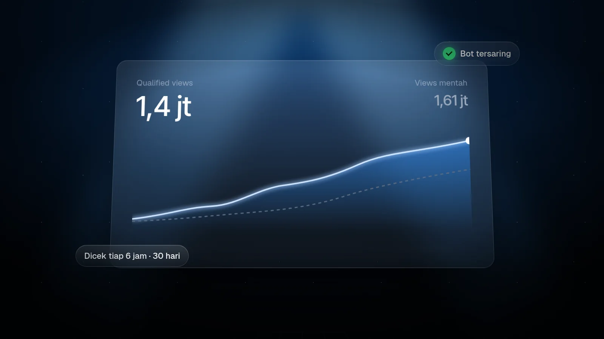
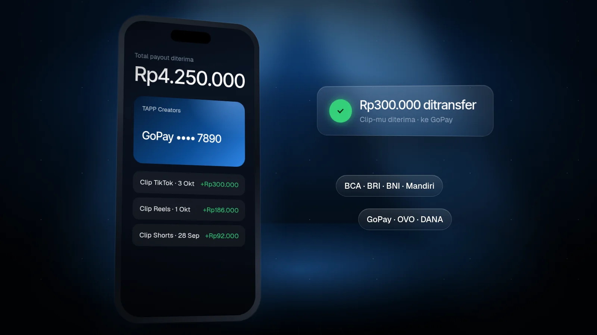
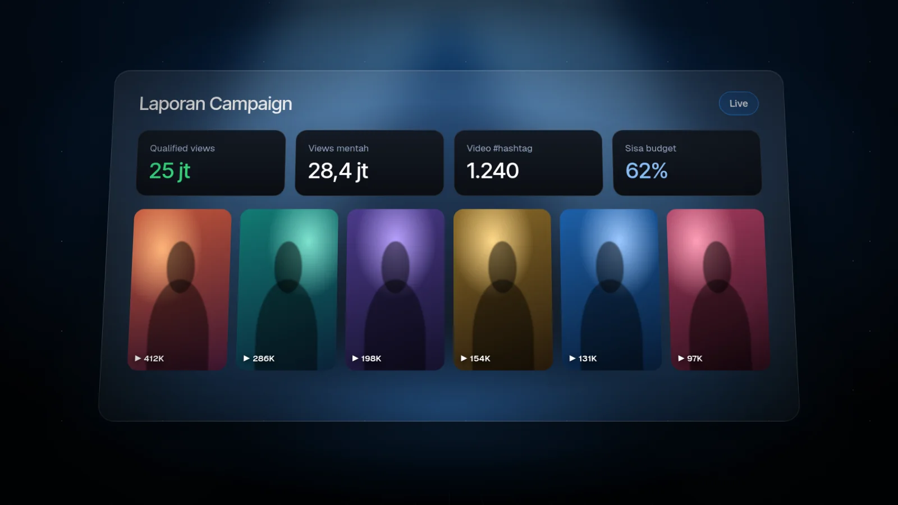
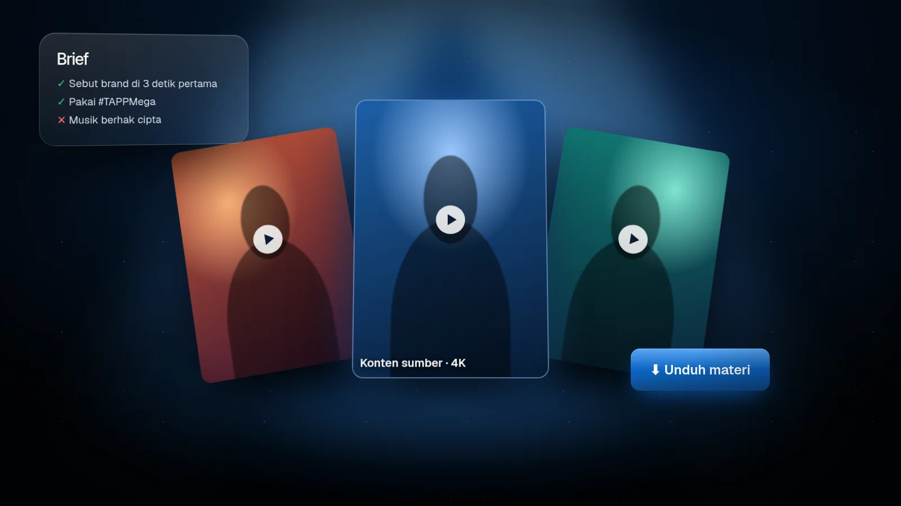
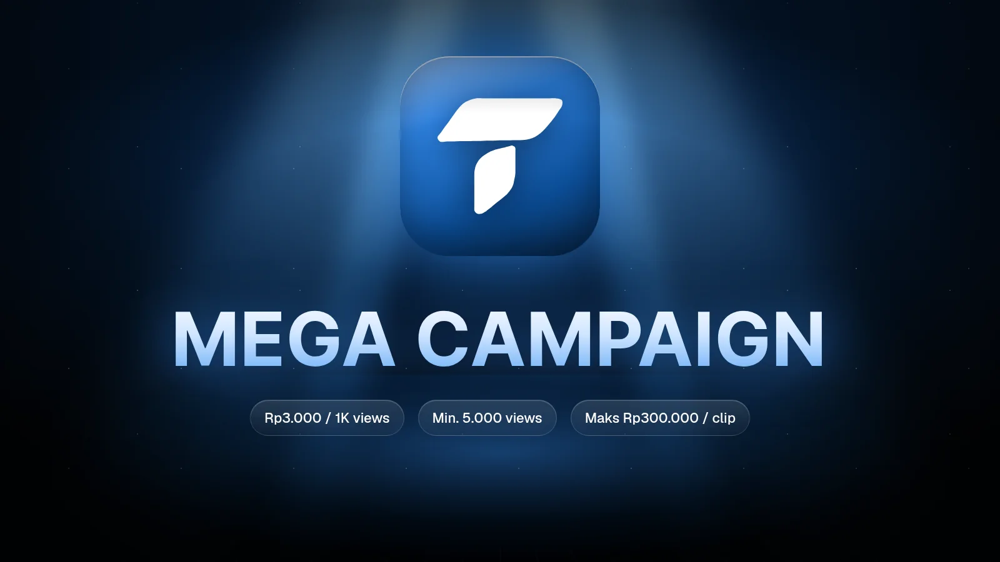
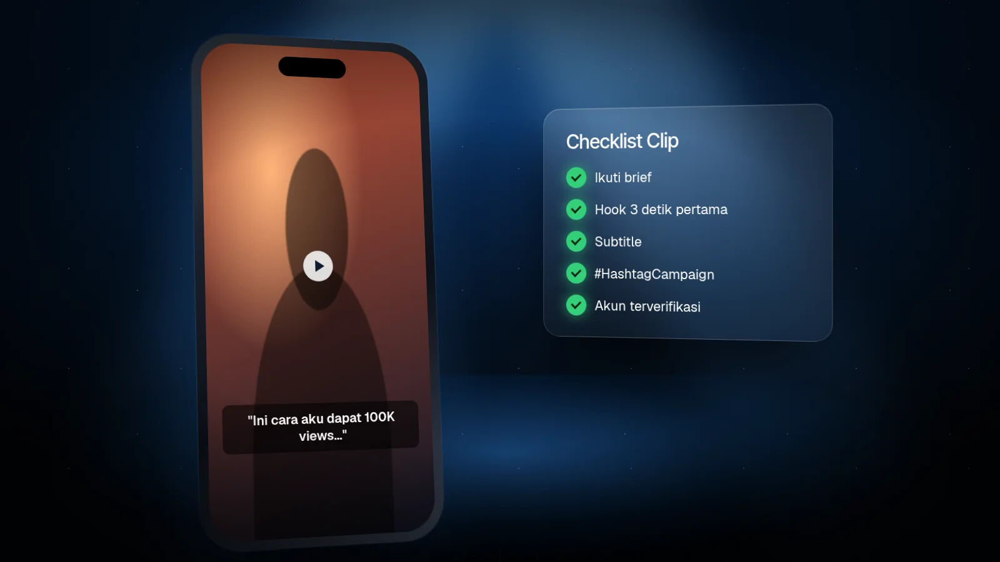
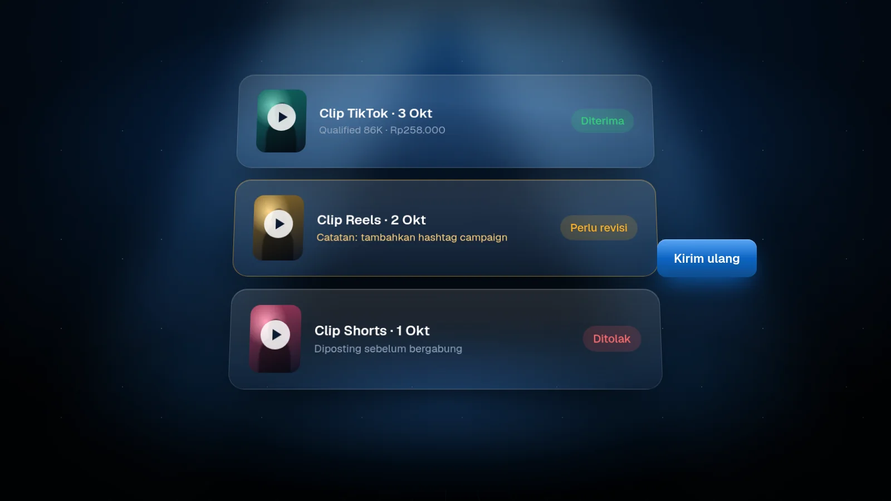
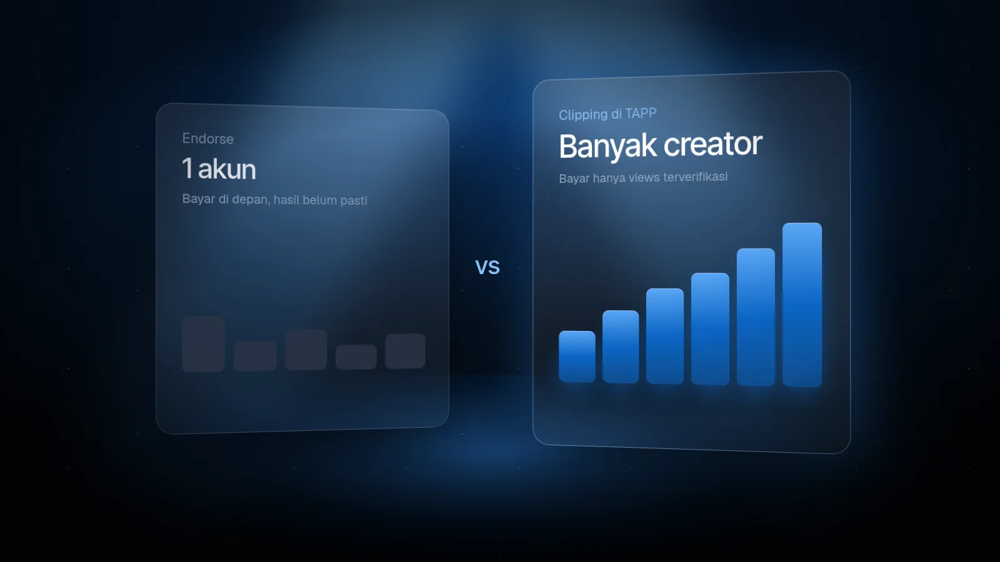
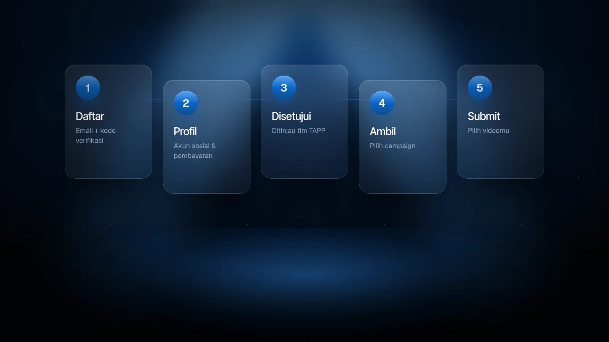
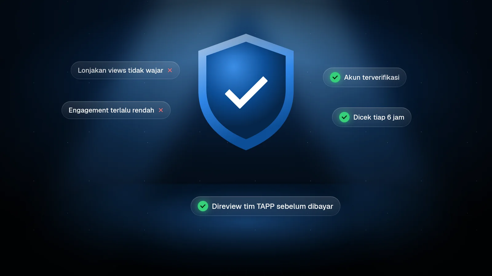

Update, Panduan, dan Info Terbaru
Kabar produk, panduan clipping, dan tips dari tim TAPP untuk creator dan brand.

Ambil Campaign: Cara Baru Join dan Submit Clip di TAPP

Biaya Campaign di TAPP: Bayar Views Terverifikasi + Fee 15%

Cara Verifikasi Akun TikTok dan Instagram Lewat Kode Bio

Qualified Views: Views Seperti Apa yang Dibayar?
Artikel Terbaru
Populer
Eksplor Artikel
Ambil Campaign: Cara Baru Join dan Submit Clip di TAPP
Biaya Campaign di TAPP: Bayar Views Terverifikasi + Fee 15%
Cara Verifikasi Akun TikTok dan Instagram Lewat Kode Bio
Qualified Views: Views Seperti Apa yang Dibayar?

Sistem Level TAPP: Syarat dan Bonus Tiap Level

Dari Views ke Rekening: Cara Pembayaran di TAPP

Cara Brand Memantau Clip dan Laporan Campaign

Menyiapkan Materi Video untuk Creator TAPP

TAPP Mega Campaign Dibuka untuk Semua Creator

7 Tips Bikin Clip yang Lolos Review dan Ramai Views

Clip Ditolak atau Perlu Revisi? Ini yang Harus Dilakukan

Bayar per Views vs Endorse: Mana yang Lebih Efisien?

Pertama Kali di TAPP: Dari Daftar Sampai Clip Pertama

Cara TAPP Menyaring Views Bot dan Aktivitas Janggal
Belum ada artikel yang cocok.